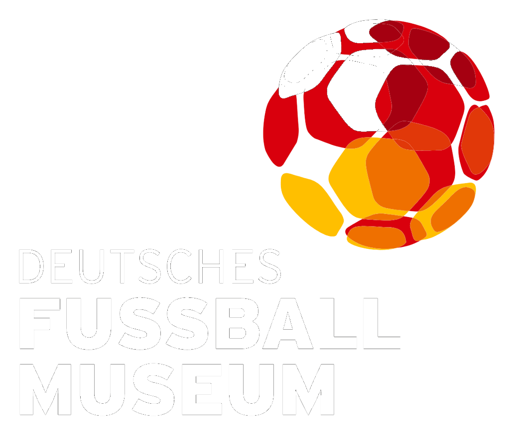
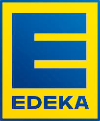

Werde Teil einer der führenden Sport-Creator-Agenturen im DACH-Raum.
Wir suchen Talente, die mit uns die Zukunft des Creator-Marketings im Sport gestalten. Ambitioniert, hands-on und mit echtem Fußball-Herz.
Wir kennen die Szene von innen.
PANA ist aus der Fußball-Creator-Szene heraus entstanden, nicht aus einem Konferenzraum. Wir wissen, wie Content in dieser Nische funktioniert, weil wir mittendrin sind.
Für Brands wie Trade Republic, das Deutsche Fußballmuseum, Edeka und SoccerBeat haben wir Creator-Kampagnen von der Strategie bis zum Reporting umgesetzt.
Genau deshalb liefern wir Ergebnisse.



Das zeichnet PANA aus
Szene-Insider
Wir sind selbst Teil der Fußball-Creator-Szene und kennen die relevanten Gesichter, Formate und Trends aus erster Hand.
Datenbasiert
Jede Auswahl und jede Kampagne fußt auf Daten, nicht auf Bauchgefühl. Reichweite und Performance sind messbar.
Full Service
Von Strategie über Creator-Matching bis Reporting: alles aus einer Hand, ein Ansprechpartner, volle Verantwortung.
Kuratiertes Roster
Wir arbeiten mit einem handverlesenen Netzwerk aus Sport-Creatorn, Qualität und Authentizität vor Masse.
Compliance-sicher
Freigaben, Kennzeichnung und rechtliche Vorgaben behalten wir im Blick, damit deine Kampagne sauber läuft.
Messbare Reichweite
Wir arbeiten mit garantierten Reichweiten und transparentem Reporting nach jeder Kampagnen-Welle.
Das erwartet dich bei uns
Reines Agentur-Setup
Keine eigene Brand, du arbeitest an vielen spannenden Kunden aus dem Sport.
Vielfältige Brands & Szene
Von Neobank bis Fußballmuseum, unterschiedliche Marken, Zielgruppen und Kampagnen.
Direkter Impact
Deine Arbeit wirkt sichtbar auf Reichweite, Performance und Wachstum unserer Kunden.
Echte Budgets
Relevante Kampagnen-Budgets und klare, messbare Performance-KPIs.
Remote-first
Du arbeitest komplett remote, mit flexiblen Arbeitszeiten und regelmäßigem Austausch im Team.
Perspektive
Entwicklung Richtung Lead, Strategie oder eigene Team-Verantwortung.
Offene Stellen
Aktuell 3 offene Positionen
Pflichtpraktikum: Länge flexibel · Freiwilliges Praktikum: bis 3 Monate · Werkstudent in Ausnahmefällen möglich
Du willst nicht nur zusehen, wie eine Agentur wächst, du willst sie mitbauen? Du willst direkt mit den Gründern an den Themen arbeiten, die über die nächste Phase von PANA entscheiden, ohne Ebenen dazwischen? Dann ist das deine Rolle. Als Founders Associate arbeitest du an der Schnittstelle von Strategie, Kundenbetreuung und internem Aufbau und siehst die Ergebnisse deiner Arbeit in echten Kampagnen und im Alltag der Agentur.
Deine Aufgaben
- Du arbeitest eng mit den Gründern an strategischen Projekten, von der ersten Idee bis zur Umsetzung, ob neue Kundenakquise, Prozessaufbau oder Reporting.
- Du unterstützt bei der Betreuung bestehender Kunden und denkst Kampagnen operativ wie strategisch mit.
- Du baust interne Prozesse und Tools mit auf, zum Beispiel rund um Creator-Datenbank, Reporting-Vorlagen oder Automatisierung mit KI-Tools.
- Du bereitest Entscheidungsgrundlagen vor, von Marktanalysen bis zu Wettbewerbsvergleichen im Sport-Marketing.
Dein Profil
- Laufendes Studium, zum Beispiel in BWL, Medien, Sport-Management oder einem verwandten Bereich
- Erste Erfahrung in einem schnellen Umfeld ist ein Plus, Start-up, Agentur oder vergleichbar, aber kein Muss
- Strukturierte, eigenständige Arbeitsweise und Lust, Verantwortung zu übernehmen statt auf Anweisungen zu warten
- Sicherer Umgang mit digitalen Tools, Interesse an KI-gestützter Arbeitsweise und Begeisterung für Sport und die Creator-Szene
Pflichtpraktikum: Länge flexibel · Freiwilliges Praktikum: bis 3 Monate · Werkstudent in Ausnahmefällen möglich
Du willst nicht nur Kontakte sammeln, sondern echte Kunden für PANA gewinnen? Als Teil des Business-Development-Teams bringst du neue Marken an Bord und hältst unsere Pipeline in Schuss, von der ersten Recherche bis zum unterschriebenen Deal.
Deine Aufgaben
- Marken & Leads aufspüren: Du recherchierst, welche Marken als Nächstes zu uns passen könnten, und findest die richtigen Ansprechpartner im Marketing.
- Unsere Pipeline am Laufen halten: Du pflegst HubSpot so, dass jederzeit klar ist, wo jeder Deal steht, kein Raten, kein Chaos.
- Outreach, der ankommt: Du hilfst dabei, Erstkontakt-Mails und LinkedIn-Nachrichten zu schreiben, die gelesen werden.
- Pitches, die überzeugen: Du baust eigenständig Pitch Decks und Angebote und bereitest Kunden-Meetings mit vor.
Dein Profil
- Du denkst unternehmerisch, arbeitest eigenverantwortlich und willst Dinge wirklich voranbringen, nicht nur bearbeiten.
- Du kommunizierst klar und überzeugend, auf Deutsch wie auf Englisch, intern wie extern.
- PowerPoint beherrschst du sicher und weißt, wie man Inhalte so aufbereitet, dass sie wirken.
- Du interessierst dich für Sport-Marketing, die Creator-Ökonomie und wie Marken-Kooperationen wirklich funktionieren.
Pflichtpraktikum: Länge flexibel · Freiwilliges Praktikum: bis 3 Monate · Werkstudent in Ausnahmefällen möglich
Du willst Marketing nicht nur in der Theorie lernen, sondern an echten Kampagnen für Marken wie Trade Republic mitarbeiten? Bei uns deckst du nicht nur einen Marketing-Bereich ab, sondern bekommst Einblick in mehrere: Creator- und Influencer-Marketing, Content und Social Media, Kampagnenmanagement. Du entscheidest mit, wo dein Schwerpunkt liegen soll.
Deine Aufgaben
- Creator- & Influencer-Marketing: Du unterstützt bei Creator-Research, Matching und der Kommunikation mit unserem Netzwerk.
- Content & Social Media: Du hilfst mit, Kampagnen-Content zu briefen, freizugeben und zu monitoren, über Instagram, TikTok und YouTube.
- Kampagnenmanagement: Du begleitest Kampagnen von der Idee bis zum Reporting und übernimmst eigene Teilaufgaben.
- Markt- & Trendrecherche: Du beobachtest die Sport- und Creator-Szene und bringst neue Formate und potenzielle Brands ins Gespräch.
Dein Profil
- Begeisterung für Fußball, Social Media und Creator-Kultur
- Strukturierte, eigenständige und zuverlässige Arbeitsweise
- Sicher im Umgang mit Instagram, TikTok & Co.
- Sehr gutes Deutsch, gutes Englisch von Vorteil
Initiativbewerbung
Keine passende Stelle dabei? Schreib uns trotzdem. Wir sind immer auf der Suche nach großartigen Leuten für die Szene.
Jetzt bewerben
Egal ob für die offene Stelle oder initiativ — schick uns kurz deine Eckdaten, wir melden uns zurück.
Alternativ per Mail: hallo@pana-agency.de
Häufig gestellte Fragen
Ganz einfach über unser Bewerbungsformular weiter unten auf dieser Seite, mit Name, E-Mail und ein paar Zeilen zu dir. Wir melden uns innerhalb weniger Werktage zurück.
Nein. Wichtiger als Vorerfahrung ist echte Begeisterung für Fußball, Social Media und Creator-Kultur sowie eine strukturierte, eigenständige Arbeitsweise.
Ja, du arbeitest komplett remote. Ein fester Standort ist keine Voraussetzung, der Austausch im Team läuft über regelmäßige Calls.
Ja, bei entsprechender Passung entwickeln wir Praktika gerne in Richtung Werkstudierendentätigkeit oder Festanstellung weiter.
Wir nehmen regelmäßig neue Leute auf, achten aber auf einen guten Fit. Schreib uns auch ohne passende Stellenausschreibung einfach initiativ.
Bei einem Pflichtpraktikum im Rahmen deines Studiums oder deiner Ausbildung ist die Dauer flexibel. Freiwillige Praktika bieten wir für bis zu 3 Monate an.